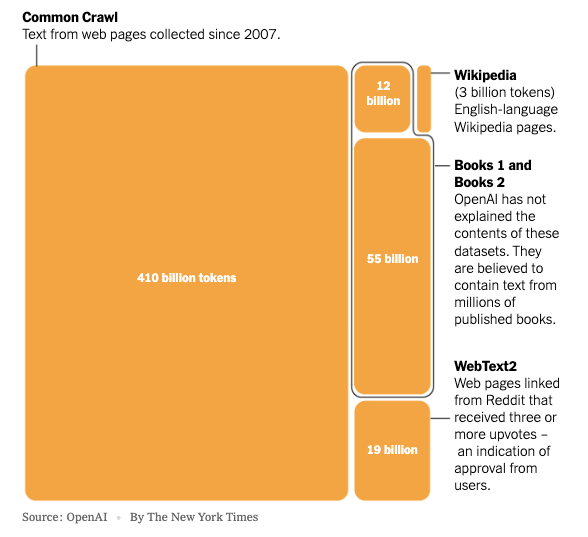

2 Inside the Black Box: Understanding What AI Actually Does
Demystifying AI’s capabilities and limitations from an implementer’s perspective
2.1 The Emperor’s New Statistics
Artificial intelligence is a broad field which long-time researchers often jokingly define as “anything computers can’t do yet.” From early grammar checkers to chess to facial recognition, many features that are now routine were once considered AI. No doubt the same will eventually be said of the new generation of large language models (LLMs), the more precise term to describe the impressive new tools that include ChatGPT, Claude, and Gemini.
Under the hood, these systems are less magical than they first appear. Today’s LLMs are based on a straightforward application of an optimization algorithm called Generative Pre-trained Transformer (GPT) invented by Google researchers in 2017. While the implementation details involve complex mathematics, the core concept is surprisingly simple: predict what words are most likely to come next in a sequence based on patterns observed in vast amounts of text.
You can think of LLMs as massively optimized and expanded versions of the auto-complete feature your smartphone has offered for years. Instead of proposing the next word or two, these models can generate full sentences, paragraphs, books, and on and on without limit. Their power comes from the GPT optimization that lets them take advantage of the massively-parallel architecture of graphic processing units (GPUs). Just as a graphical image can be broken into smaller pixels, each manipulated in parallel, LLMs break text documents into characters (or “tokens”) that are processed simultaneously within the GPU.
The result is an impressive pattern-matching system that can mimic human-written text with remarkable fidelity—but without the understanding that underlies human communication. When ChatGPT writes a paragraph that sounds like Ernest Hemingway, it’s not channeling Hemingway’s artistic vision or life experiences. It’s generating text based on statistical patterns it observed in Hemingway’s writing and similar texts. The model has no concept of fishing, bullfighting, war, or any other experiences that shaped Hemingway’s distinctive voice. It’s merely producing words that, statistically speaking, are likely to follow one another in a Hemingway-like manner.
2.2 One-Way Streets: The Critical Limitation of LLMs
The GPT algorithm has one critical limitation that explains many of its failures: once set in motion, it cannot backtrack. Humans plan ahead, weigh different scenarios, and can change their minds based on foreseen alternatives. GPTs can only fake this planning ability through their access to mountains of data where such alternatives have already been explored.
Consider how you would solve a Sudoku puzzle. You might place a number in a cell, then work through several more cells before realizing your initial choice led to a contradiction. No problem—you backtrack, erase the number, and try a different approach. This recursive thinking process is fundamental to human problem-solving. But LLMs cannot do this. They generate text one token at a time, with no ability to revise earlier decisions based on later realizations.
This limitation explains why LLMs struggle with tasks that humans find relatively straightforward. They cannot do Sudoku, or handle chess positions not covered in their training data. Similarly, although they may appear to evaluate potential investment scenarios, they are merely generating plausible-sounding text based on patterns they’ve observed in financial discussions. They cannot truly consider alternative futures or change their analysis midstream.
This lack of genuine reasoning capability is why it would be wise to take AI predictions with considerable caution. Because they have no concept of imagining how a future situation might change current plans, they cannot truly engage in the kind of counterfactual thinking that underpins human judgment.
2.3 Inside the Training Process
LLMs are models that compress vast amounts of human knowledge—written, spoken, images, video—into a format that can generate similar-seeming content when given a starting prompt. Although the final models themselves are small enough to fit on a laptop or smartphone, they are created through a training process that consumes massive amounts of data—virtually everything on the public internet, plus collections of text from millions of books, magazines, academic journals, patent filings, and anything else their creators can find.
Thanks to the clever, time-saving shortcut discovered in the 2017 GPT algorithm, key parts of the training happen in parallel, limited only by the number of GPUs available. It is this optimization that explains the mad rush to buy GPUs, the chief beneficiary of which is Nvidia, thanks to its decades-long leadership in these fast processors. Although Nvidia chips were originally designed for fast graphics, their wide adoption means that many engineers are well-acquainted with CUDA (Compute Unified Device Architecture), the low-level graphics programming software that powers Nvidia devices. When designing the various implementations of GPT, it was natural for developers to optimize for CUDA, further cementing Nvidia’s lead.
Once trained, the LLM is a statistical prediction engine that knows the most likely word, phrase, or paragraphs that follow any given input. It knows, for example, that the phrase “Mary had a little” is highly likely to be followed by “lamb” or even the entire phrase “Its fleece was white as snow.” It will apply the same statistical completion algorithm to any snippet of text, including those that look like questions, where the most likely “completion” is the answer to the question. The statistically most likely way to complete the phrase “what is 1 + 1?” is “2.”
The final LLM consists of billions of “parameters,” finely-tuned statistical values created during the training process. But generating the response to your input requires similar levels of prodigious machine power. In fact, every character you type into the ChatGPT input box, as well as every character it types back, goes through many billions of computations. That slight delay you see as each character comes back at your terminal is not a clever UX (user experience) effect intended to appear like a human is typing the answer. In fact, the characters come out slowly because of the untold levels of computing power required to generate each one of them. Multiply this by the many millions of simultaneous ChatGPT users and you can understand why state-of-the-art LLMs are phenomenally expensive to operate.
2.4 What Does the Training Data Include?
The datasets used to train LLMs are enormous and diverse. OpenAI’s GPT-4, for example, was trained on hundreds of billions of words, including:
- The vast majority of the public internet, including websites, forums, and social media
- Millions of books, from classic literature to modern non-fiction
- Scientific papers and academic journals
- Code repositories and technical documentation
- News articles and government documents
This massive corpus allows the model to encounter language used in countless contexts, enabling it to generate text that mimics a wide range of styles and domains. However, this approach also has significant limitations. The training data inevitably contains biases, inaccuracies, and outdated information that get encoded into the model’s parameters. And because the model has no understanding of the content—only statistical patterns—it cannot distinguish between reliable sources and misinformation.
Furthermore, while the model’s training data is vast, it’s still finite and frozen at a specific point in time. This creates what’s called a “knowledge cutoff”—a date beyond which the model has no information. Any developments, events, or publications after this date are completely unknown to the model unless specifically provided in the conversation.

2.5 Models Learning from Models: The Recursive Training Problem
An increasingly troubling issue is the growing proportion of AI-generated content on the internet. As LLMs produce more and more text that gets published online, newer models are increasingly training on outputs from older models rather than authentic human expression. This creates a recursive problem—models learning from models learning from models—potentially amplifying biases and errors with each generation.
Researcher Ilia Shumailov at the University of Cambridge calls this phenomenon “the curse of recursion,” and it presents a fundamental challenge to the current approach of training AI on internet data. As AI-generated content proliferates, distinguishing authentic human expression from synthetic text becomes increasingly difficult. This recursion problem potentially undermines the very foundation of LLM training by gradually diluting the human element in the training data.
2.6 Beyond Text Completion: Fine-Tuning for Specific Tasks
While base LLMs are essentially sophisticated text prediction engines, they can be adapted for specific purposes through a process called fine-tuning. This involves additional training on specialized datasets with human feedback to optimize the model for particular tasks or to align its outputs with human values.
For example, the base GPT model might generate toxic or harmful content if that’s what the statistical patterns in its training data suggest. To address this, OpenAI and other companies employ techniques like RLHF (Reinforcement Learning from Human Feedback), where human evaluators rate different model outputs, and these ratings are used to further train the model to produce more helpful, harmless, and honest responses.
This fine-tuning process represents a crucial point of human intervention in the AI pipeline. The values and judgments of the human evaluators directly shape what kinds of responses the model will prioritize. However, this process also introduces new challenges, including the potential for evaluator biases to become magnified in the model’s behavior and the difficulty of clearly defining concepts like “helpful” or “harmful” across diverse cultural contexts.
2.7 What AI Can’t Do: The Limitations That Matter
Understanding what LLMs cannot do is as important as appreciating what they can do. Despite their impressive capabilities, today’s AI systems have several fundamental limitations:
No Understanding or Consciousness: LLMs process patterns without understanding meaning. They have no consciousness, beliefs, desires, or intentions. They cannot truly understand concepts like justice, beauty, or truth—they can only mimic how humans talk about these concepts.
No Backtracking or Planning: As mentioned earlier, LLMs cannot revise earlier parts of their generation based on later realizations. They cannot truly plan ahead or engage in the kind of recursive thinking that humans employ naturally.
No Reality Grounding: LLMs have no direct access to physical reality. Their knowledge comes entirely from text and images in their training data, not from embodied experience in the world. They cannot verify facts against reality, only against patterns in their training data.
No Self-Improvement: While LLMs can be updated by their creators, they cannot improve themselves through experience. Each interaction is essentially fresh—the model doesn’t learn from its mistakes or successes across conversations.
No Originality: LLMs can combine and recombine elements from their training data in new ways, but they cannot create truly original concepts. They are fundamentally derivative, limited by what they’ve seen before.
These limitations explain why LLMs, despite their impressive text generation capabilities, fail at tasks requiring genuine understanding, counterfactual reasoning, or creative leaps beyond their training data.
2.8 The Human Element: What We Bring That AI Can’t Replace
The limitations of LLMs highlight precisely what makes human intelligence distinctive and valuable. When we generate language, solve problems, or make decisions, we do far more than pattern matching. We understand the world through embodied experience, can plan recursively, and can imagine counterfactual scenarios. We can backtrack, revise our thinking, and make creative leaps beyond what we’ve previously encountered.
Consider how a skilled financial analyst evaluates an investment opportunity. They don’t simply pattern-match against previous investments; they consider unique aspects of the current situation, imagine various future scenarios, and continuously revise their analysis as new information emerges. They bring judgment based on embodied experience in the world—something no LLM can replicate.
This is why the most effective applications of AI don’t attempt to replace human judgment but rather to enhance it. When AI handles the pattern-matching tasks it excels at, humans are freed to focus on the aspects of work that require judgment, creativity, and understanding.
2.9 The Balance: Where Humans and AI Excel
The most successful implementations of AI technology recognize the complementary strengths of humans and machines. AI demonstrates remarkable capability in processing vast amounts of data quickly and identifying patterns across large datasets that would overwhelm human attention. It excels in generating content based on statistical regularities, performing repetitive tasks with unwavering consistency, and operating continuously without the fatigue that limits human performance.
Humans, meanwhile, bring fundamentally different strengths to the table. We understand context and meaning in ways that transcend statistical correlation. We make ethical judgments that require balancing competing values and considering impacts that may not be quantifiable. Our ability to think recursively and counterfactually—to imagine “what if” scenarios and revise our thinking—allows us to navigate novel situations with a flexibility that AI cannot match. Perhaps most importantly, humans can create truly novel concepts and approaches, and adapt to unprecedented situations by drawing on embodied experience and cross-domain knowledge.
By designing systems that leverage these complementary capabilities, organizations can achieve outcomes superior to what either humans or AI could accomplish alone. A human financial analyst with AI assistance, for instance, can process market data at unprecedented scale while maintaining the judgment needed to contextualize that data within broader economic and political realities. This synergy of human and artificial intelligence is the essence of the enhancement thesis we explore throughout this book.
2.10 The Implications: Why This Matters
Understanding what AI actually does—and what it doesn’t do—has profound implications for how we implement these technologies in business and society. When we recognize that LLMs are essentially sophisticated pattern-matching systems rather than genuinely intelligent entities, we can make more informed decisions about where and how to apply them.
This understanding helps explain why purely automated approaches often disappoint, while enhancement approaches succeed. Automated systems that attempt to replace human judgment entirely run up against the fundamental limitations of pattern matching. Enhancement approaches that combine AI’s computational power with human judgment and creativity can deliver superior results.
For investors, this insight suggests focusing on companies that understand the complementary nature of human and artificial intelligence rather than those promising full automation. For business leaders, it means designing implementation strategies that augment rather than replace human capabilities. And for workers, it means developing the distinctively human skills that AI cannot replicate.
2.11 Where We Go From Here
As AI technologies continue to advance, the boundary between what they can and cannot do will shift. Future systems will likely overcome some of the limitations we’ve discussed, potentially enabling more sophisticated reasoning and planning. However, the fundamental distinction between statistical pattern matching and genuine understanding remains, and with it, the continued importance of human judgment.
In the chapters ahead, we’ll explore how this understanding of AI’s capabilities and limitations translates into practical implementation strategies across industries. We’ll examine the “what versus how” distinction that guides effective human-AI collaboration, the philosophical dimensions of human judgment, and the investment implications of the enhancement thesis.
By grounding our approach in a clear-eyed understanding of what AI actually does, we can move beyond both the hype and the fear to develop strategies that truly enhance human capabilities rather than attempting to replace them.